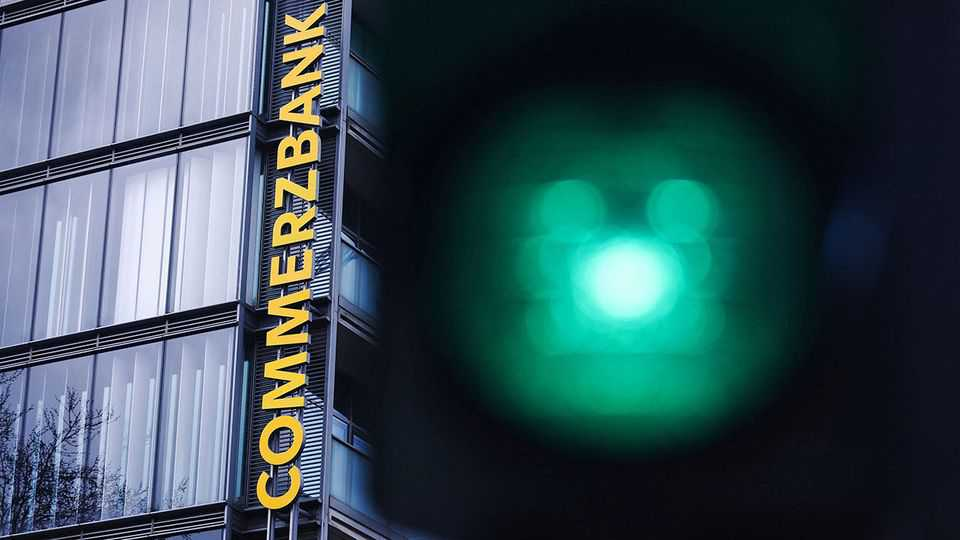

It’s not just Commerzbank: Italians are eating up German business
The takeover of the bank by UniCredit is only the start

Oct 22nd 2026
“Die Italiener kommen”, screamed a headline in June in the Frankfurter Allgemeine Zeitung (FAZ), a normally sober German daily. The Italians in question are not tourists coming for German sights or workers coming for German jobs. Rather, despite what the FAZ calls Italy’s “lower economic prestige”, it is Italian banks and businesses salivating over the giant German market and its choicest cuts.
On October 15th UniCredit, Italy’s second-biggest lender by assets and revenue, said it got the nod from the European Central Bank (ECB) to seal a €45bn ($51bn) hostile takeover of Commerzbank, its German opposite number. The banking deal is the biggest of recent Italo-German mergers. But it is part of a much larger feast.
Earlier this year Italo, an Italian high-speed railway operator, entered Germany. By 2028 it plans to challenge state-owned Deutsche Bahn along two lucrative routes: Munich-Cologne-Dortmund and Munich-Berlin-Hamburg. A year ago MediaForEurope, the empire controlled by the family of Silvio Berlusconi, a late former prime minister, paid €1.8bn for ProSiebenSat.1, Germany’s second-biggest private broadcaster—and immediately replaced Bert Habets, ProSieben’s Dutch boss, with an Italian, Marco Giordani.
Smaller Italian firms, meanwhile, are going after the Mittelstand. Last year the value of their foreign takeovers rose by 74%, to €24bn, according to Arkios, a Milanese investment bank. Germany is Italy’s biggest trading partner and behind only America and Britain as a takeover target.
In 2025 Polifarma, an Italian drugmaker, bought Hennig Arzneimittel, a competitor from Frankfurt, and Bending Spoons, a collector of tech startups, took over Komoot, a German route-planning app. (Bending Spoons has just sold a big stake in itself to Berkshire Hathaway, a legendary American investment firm.) In December DIESSE and EsseEmme Tecno, two other medium-size firms, bought parts of Mayer, an insolvent German textile-machinery manufacturer, to get hold of its industrial-braiding technology. And in March an Italian maker of machinery, Danese, swallowed a German one, Zwaans.
The Italian appetite for German firms reverses a historical trend. It used to be the Italians with the brands and the Germans with the money. Volkswagen bought Lamborghini (sports cars) in 1998 and Ducati (sports bikes) in 2012. Allianz, a German insurer, picked up RAS, an Italian one, in 2005. HeidelbergCement (now Heidelberg Materials) absorbed Italcementi in 2016.
Such deals are not entirely a thing of the past: last year Lufthansa acquired a 41% stake in ITA Airways and says it will increase that to 90% next year. But as Germany’s GDP has more or less stagnated since the covid-19 pandemic, more German companies, especially manufacturers competing with cheap alternatives from China, are receptive to foreign advances. As for the Italian acquirers, their domestic economy may have grown faster than Germany’s in recent years, but it is hardly pizza-oven hot. A slice of Europe’s biggest market, garnished with technology and engineering know-how, therefore looks appetising, says Jörg Buck of the German-Italian chamber of commerce in Milan.
This is not to everyone’s taste. The German government (which owns 13% of Commerzbank) is revulsed by the desire of UniCredit’s hard-charging boss, Andrea Orcel, to sack Bettina Orlopp, Commerzbank’s chief executive—pronto.
It also dislikes the tactics Mr Orcel has used in his pursuit of Commerzbank. He built UniCredit’s stake with the help of derivatives, which obscured his intentions. He also made a stingy bid for all shares his bank did not own just before its stake reached 30%. This let him circumvent the legal requirement to launch a full takeover bid on reaching 30% ownership while sidestepping the need to offer a decent premium such a bid would normally include. He could then keep buying up Commerzbank shares on the cheap in the open market.
The German finance ministry wants to change takeover law to prevent such “lowballing”, by requiring a second mandatory offer once an acquirer’s stake in a target firm reaches 50%. At that stage, an acquirer forced to make a full takeover bid would find it harder to get away with a stingy offer. The ministry also wants stricter rules on acquirers’ use of derivatives to build their stakes.
This looks like sour Riesling grapes. Even if the proposed rules were enacted, they would come too late to prevent the Commerzbank takeover—especially now that UniCredit has won the ECB’s blessing. And they are unlikely to keep other Italians away. From the south, Deutschland AG looks just too delectable. ■